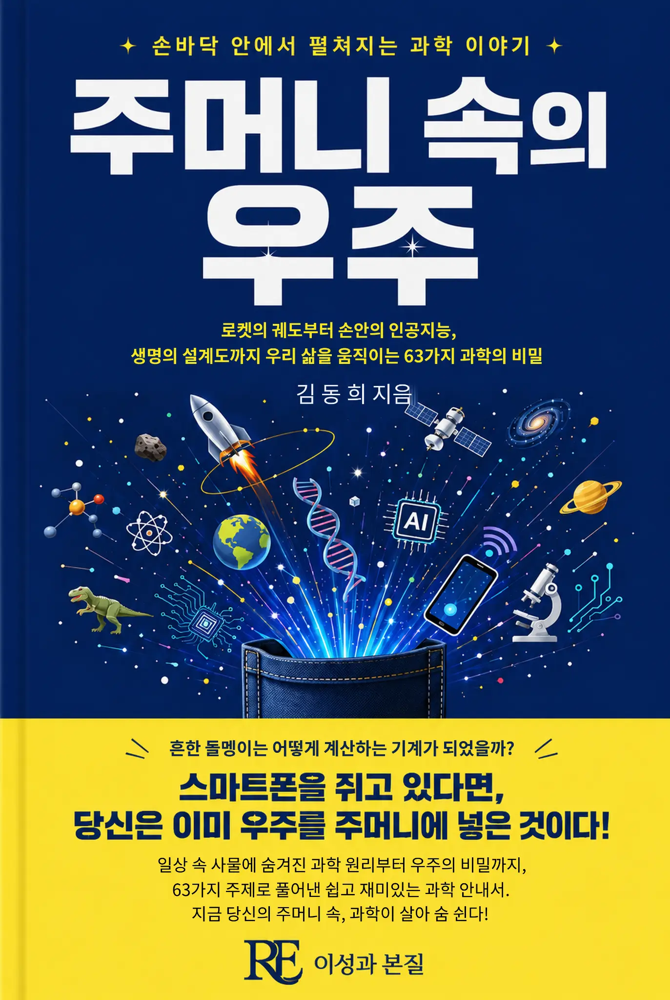

로켓의 궤도부터 손안의 인공지능, 생명의 설계도까지. 스마트폰을 쥐고 있다면 당신은 이미 우주를 주머니에 넣은 것이다. 일상 속 과학 원리를 25가지 주제로 풀어낸다.
출간일 2026-08-12
기획 의도
스마트폰 하나에 로켓 궤도 계산부터 인공지능, 생명의 설계도까지 담겨 있습니다. 이 책은 손 안의 기기에 숨은 25가지 과학 원리를 통해, 일상이 곧 우주의 축소판임을 보여줍니다.
예상 독자
과학 교양서를 즐겨 읽는 일반 독자, 청소년 및 과학 입문 독자.
목차
1부. 우주로 가는 법 — 중력을 거슬러 별을 향하는 법
- 1장 연료 없이 별까지 가는 법
- 2장 하늘에는 왜 층이 있는가
- 3장 다시 달로, 그리고 더 멀리
- 4장 던진 것을 되받는 법
2부. 손안의 기술 — 신호와 계산과 에너지
- 5장 손바닥 기계가 지구를 넘는 법
- 6장 모래가 생각하는 법
- 7장 전기를 담는다는 것
- 8장 백 년 묵은 꿈은 왜 이제야 깨어났나
- 9장 가벼운데도 어려운
- 10장 헬리콥터를 대신할 조용한 날개
3부. 기계는 어떻게 배우는가 — 인공지능, 그 가능성과 한계
- 11장 가르치지 않고 배우게 하다
- 12장 오래된 발상은 왜 이제야 터졌나
- 13장 다음 한 마디를 맞히는 기계
- 14장 그것은 정말 이해하는가
- 15장 지식을 배반하지 못하는 기계
4부. 시간을 읽는 법 — 돌과 뼈로 쓴 지구와 생명의 역사
- 16장 정말 지구는 45억 살인가
- 17장 지구를 시대별로 색칠한 지도, 그리고 예언된 물고기
- 18장 절반의 눈도 쓸모가 있다
- 19장 하늘에서 떨어진 종말
5부. 생명을 읽고 고치다 — 유전자에서 신약까지
- 20장 DNA, 꺼내고 읽다
- 21장 DNA, 다시 쓰다
- 22장 자물쇠에 맞는 열쇠
- 23장 우연에서 설계로
- 24장 다시 생명에게 맡기다
- 25장 몸을 약으로, 몸의 군대를 무기로
도서목록으로 돌아가기